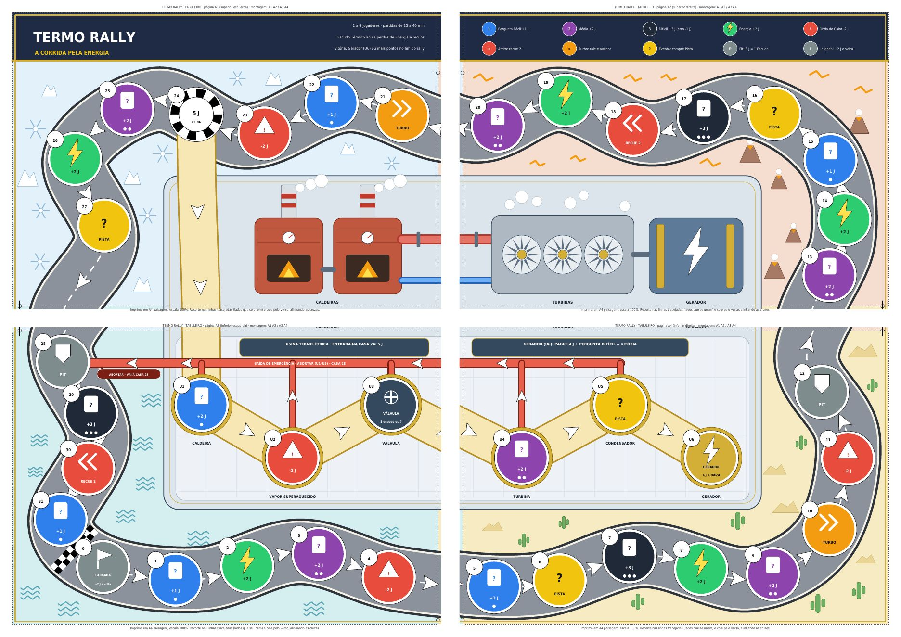
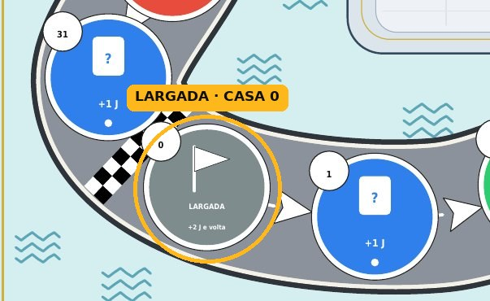
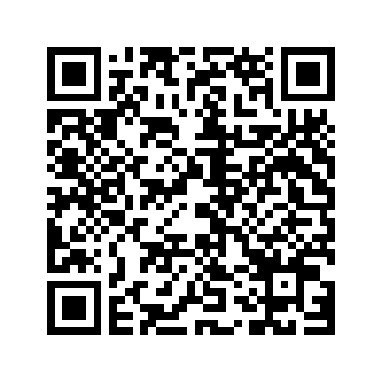
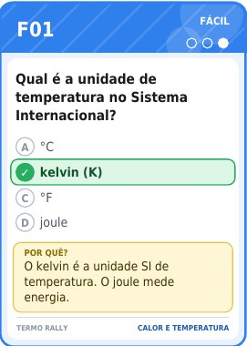
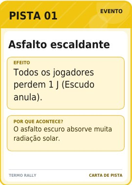

Você é um cientista numa corrida pela energia. Percorra o circuito de 32 casas, acumule Energia (J), proteja-se com Escudos Térmicos e responda perguntas de Termodinâmica: chegue ao Gerador da Usina Termelétrica para ligá-la, ou junte mais Energia que os rivais. Do download dos materiais à primeira rodada: um guia para professores e estudantes.

Como você quer começar? O guia pode ser lido pelo objetivo do jogo ou direto pelo material e pela preparação.
Duas formas de vencer: arriscar tudo no Gerador da Usina Termelétrica ou jogar seguro e somar mais pontos até a bandeirada.
Chegue ao Gerador (U6), pague 4 J e acerte uma pergunta Difícil. A vitória é imediata, mas o erro custa caro.
Ao fim do rally, vence quem tiver mais pontos.
Energia + 2 × Escudos
O leitor mostra a carta, confirma o acerto ou o erro e lê a explicação curta. O gabarito impresso na carta é decisivo.
Um jogo de tabuleiro de Termodinâmica para o Ensino Médio, pensado para circular: imprima, jogue, adapte e compartilhe.
jogadores
minutos por partida
cartas de pergunta: 18 Fáceis, 18 Médias e 9 Difíceis
casas no circuito e na Usina Termelétrica
Jogo de tabuleiro de Termodinâmica para o Ensino Médio.
O manual de instruções reúne todas as regras do Termo Rally em 4 páginas A4. O guia rápido resume o essencial no painel de cada jogador.
No manual você encontra:
O arquivo será aberto em uma nova aba.
Cada jogador tem um painel-guia com o resumo da partida: início, turno, efeitos das casas, Escudo, Bifurcação, Usina, fim de jogo e Pódio.
O painel também tem espaços de 25 mm para as fichas: Energia (máx. 12 J), Escudos Térmicos (máx. 3) e Fichas de Volta.
Toque em uma casa para ver o efeito, conforme o manual. Você resolve somente a casa em que parou: as casas pelas quais apenas passou não têm efeito (exceto a Largada e a Bifurcação).
Se o jogo terminar pela Bandeirada, a ordem de pontos já dá a classificação completa. Se alguém vencer pelo Gerador, o grupo pode escolher continuar até sobrar o último colocado:
Todos os jogadores começam no mesmo ponto do circuito: a Largada, casa 0.

Abra o tabuleiro e coloque todos os peões na Largada (casa 0).
Começa o jogador mais jovem. O jogo segue pela ordem crescente da numeração das casas e das jogadas.
Ao cruzar ou parar na Largada (vindo da 31): +2 J e 1 Ficha de Volta. A saída inicial não conta. Ao parar, você pode usar o Pit.
Aponte a câmera do celular para o QR code para acessar o tabuleiro, as cartas, as fichas, o manual e o guia rápido, prontos para imprimir.

Abrir pasta no DriveFichas, escudos, dado e peões prontos para imprimir em 3D, além da caixa organizadora.
Tabuleiro, cartas, fichas e painéis-guia em folhas A4. Imprima em escala 100 %, recorte e jogue.
Tampinhas de garrafa viram peões, uma cor para cada jogador. Fichas e escudos podem ser de sucata. Use a criatividade!
Os PDFs abrem em uma nova aba. Imprima em escala 100 %.
4 páginas A4: circuito de 32 casas e Usina de 6 casas. Monte A1 A2 / A3 A4.
45 cartas de Pergunta e 10 de Pista, em 7 páginas. Uma face só: recorte nas marcas.
Fichas de Energia, Escudos Térmicos e Fichas de Volta, de 25 mm. Cole em papelão de 1,5 mm e recorte nos círculos.
Guia rápido do jogador, com espaços para as fichas. São 4 painéis, um por jogador.
Arquivo de projeto com todas as peças do jogo, em 11 placas de impressão, já organizado para imprimir de uma vez. Se preferir imprimir por partes, use os arquivos STL separados abaixo.
Opção 2 · peças separadas (STL)
| Peça | Qtd. | Descrição | |
|---|---|---|---|
Ficha de Energia 1 J1J_x48.stl | 48 | Ficha de 25 × 25 mm e 2 mm de espessura. Imprima 48 unidades. Banco de 60 J no total com as fichas de 5 J. | STL |
Ficha de Energia 5 J5J_x12.stl | 12 | Ficha de 25 × 25 mm e 2 mm de espessura. Vale 5 fichas de 1 J (troca livre). | STL |
Ficha de Escudo Térmicoescudo_x12.stl | 12 | Ficha de 25 × 25 mm e 2 mm de espessura. Máximo de 3 por jogador. | STL |
Ficha de Voltavolta_x12.stl | 12 | Ficha de 25 × 25 mm e 2 mm de espessura. 3 por jogador, em 4 cores (vermelha, azul, laranja e roxa). | STL |
Peãopeao_x4.stl | 4 | Um por jogador, parecido com uma mini turbina de usina. Cerca de 19 mm de diâmetro e 17 mm de altura. | STL |
Dado de 6 facesdado_15mm.stl | 1 | Cubo de 15 mm. Fica guardado na caixa. | STL |
Caixa organizadora · caixa esquerdacaixa esq.stl | 1 | Peça da caixa organizadora: 163,5 × 239,2 mm, 34 mm de altura. | STL |
Caixa organizadora · caixa direitacaixa_dir.stl | 1 | Peça da caixa organizadora: 160,3 × 239,2 mm, 34 mm de altura. | STL |
Caixa organizadora · tampa esquerdatampa esq.stl | 1 | Peça da caixa organizadora: 158,8 × 219 mm, 2,8 mm de espessura. | STL |
Caixa organizadora · tampa direitatampa dir.stl | 1 | Peça da caixa organizadora: 159 × 219 mm, 4 mm de espessura. | STL |
Caixa organizadora · bandeja 1bandeja_1.stl | 1 | Peça da caixa organizadora: 137,6 × 215,2 mm, 18 mm de altura. | STL |
Caixa organizadora · bandeja 2bandeja 2.stl | 1 | Peça da caixa organizadora: 137,6 × 215,2 mm, 18 mm de altura. | STL |
Medidas calculadas a partir dos arquivos STL. As quantidades das fichas, dos peões e do dado seguem a tabela de componentes do manual.
| Componente | Qtd. | Observação |
|---|---|---|
| Tabuleiro (4 páginas A4) | 1 | Circuito de 32 casas + Usina de 6 casas. Monte A1 A2 / A3 A4 |
| Cartas de Pergunta | 45 | 18 Fáceis, 18 Médias, 9 Difíceis. Uma face só: pergunta, alternativas com a resposta certa marcada e explicação curta |
| Cartas de Pista | 10 | P01 a P10 |
| Fichas de Energia 1 J | 48 | Impressas em 3D. Banco de 60 J no total com as fichas de 5 J |
| Fichas de Energia 5 J | 12 | Impressas em 3D. Valem 5 fichas de 1 J (troca livre) |
| Fichas de Escudo Térmico | 12 | Impressas em 3D. Máximo de 3 por jogador |
| Fichas de Volta | 12 | Impressas em 3D, 3 por jogador, em 4 cores (vermelha, azul, laranja e roxa) |
| Painéis-guia | 4 | Guia rápido e espaços para as fichas |
| Dado de 6 faces (15 mm) | 1 | Impresso em 3D; fica guardado na caixa |
| Peões | 4 | Impressos em 3D, um por jogador |
A sequência do manual, da montagem do tabuleiro à primeira jogada.
Movimentos causados por efeitos (recuos de obstáculos e avanços de Pista) não ativam a casa de chegada e nunca permitem entrar na Usina. A única exceção é a casa Turbo, que ativa a casa de chegada normalmente, mas também não permite virar na Bifurcação.
Você está na casa 22 com 8 J e 1 Escudo. Rola 5: a casa 23 é o 1º passo, a 24 é o 2º. Você paga 5 J e vira, então U1 é o 3º passo, U2 o 4º e U3 o 5º. Você para em U3 (que é parada obrigatória) e resolve só essa casa: as casas 23, 24, U1 e U2 pelas quais passou não têm efeito. Descarte 1 Escudo para abrir a Válvula, ou responda uma pergunta Média. No turno seguinte, role o dado e siga em direção a U4, U5 e U6.
Cartas de um lado só. Recorte nas marcas e imprima em A4, escala 100 %. As 45 cartas de Pergunta cobrem 9 temas, com 5 cartas cada: 2 Fáceis, 2 Médias e 1 Difícil.


18 cartas (F01 a F18). Acerto: +1 J. Erro: nada.
18 cartas (M01 a M18). Acerto: +2 J. Erro: nada.
9 cartas (D01 a D09). Acerto: +3 J. Erro: −1 J (o Escudo anula).
10 cartas (P01 a P10), compradas nas casas de Evento. Leia, cumpra e coloque a carta no fundo do baralho.
| Tema | Cartas |
|---|---|
| 1 Calor e temperatura | F01, F02, M01, M02, D01 |
| 2 Equilíbrio térmico | F03, F04, M03, M04, D02 |
| 3 Propagação do calor | F05, F06, M05, M06, D03 |
| 4 Mudanças de estado | F07, F08, M07, M08, D04 |
| 5 Calor sensível e latente | F09, F10, M09, M10, D05 |
| 6 Energia interna | F11, F12, M11, M12, D06 |
| 7 Trabalho dos gases | F13, F14, M13, M14, D07 |
| 8 Primeira Lei da Termodinâmica | F15, F16, M15, M16, D08 |
| 9 Máquinas térmicas | F17, F18, M17, M18, D09 |
| Carta | Título | Efeito |
|---|---|---|
| P01 | Asfalto escaldante | Todos os jogadores perdem 1 J (Escudo anula). |
| P02 | Pit-stop relâmpago | Ganhe 1 Escudo. |
| P03 | Combustível reforçado | Ganhe +3 J. |
| P04 | Superaquecimento | Perca 2 J (Escudo anula). |
| P05 | Vento a favor | Avance 2 casas no circuito (não ativa a chegada). Na Usina, ganhe +1 J. |
| P06 | Troca de calor | Escolha um oponente: ele perde 1 J (Escudo anula) e você ganha 1 J se ele perder. |
| P07 | Equilíbrio térmico | O jogador com mais Energia entrega 1 J ao jogador com menos Energia (em empate, quem comprou a carta escolhe entre os empatados; se todos têm o mesmo, nada acontece). |
| P08 | Questão bônus | Compre uma carta Fácil: acerto +2 J. |
| P09 | Isolamento térmico | Se tiver menos de 2 Escudos, ganhe 1 Escudo; senão ganhe 1 J. |
| P10 | Pane no radiador | Perca 1 Escudo; se não tiver nenhum, perca 2 J. |
A Segunda Lei aparece apenas nas cartas F18 e D09. Vale apresentá-la antes da partida como “o calor não se converte 100 % em trabalho”. A carta D06 considera gás ideal (energia interna proporcional à temperatura em kelvin).
O Termo Rally foi pensado para circular. Você pode, sem pedir autorização:
Com a sua turma, em casa ou na escola.
O material completo, para colegas, alunos e outras escolas.
Criar novas perguntas, ajustar as regras ao seu grupo, traduzir, trocar as ilustrações.
Inclusive a caixa organizadora em impressão 3D.
Só pedimos que você mantenha o crédito dos autores e, se puder, compartilhe suas adaptações com a comunidade, para que outros professores também aproveitem. Reproduzir e espalhar este jogo é exatamente o que esperamos.
Marque o que já está pronto. O progresso fica salvo neste navegador.
Universidade Federal do Rio Grande · FURG
TERMO RALLY · A Corrida pela Energia
Jogo de tabuleiro de Termodinâmica para o Ensino Médio.
| Realizado por | Adryel W. Martins |
|---|---|
| Atividade | Elaborada na disciplina de Atividades de Ensino de Física II |
| Curso | Física Licenciatura |
| Período | 2026/2 |
| Orientação | Profa. Rafaele Araujo e Valmir Heckler |
| Parceria | Jardim Maker CEAMECIM |
Profa. Rafaele Araujo e Valmir Heckler
Jardim Maker CEAMECIM
CNPq · Bolsa de Iniciação Científica (IC)
Este material está sob a licença Creative Commons Atribuição-NãoComercial 4.0 Internacional: você pode compartilhar, adaptar e remixar, desde que atribua a autoria e não use para fins comerciais. Ler a licença